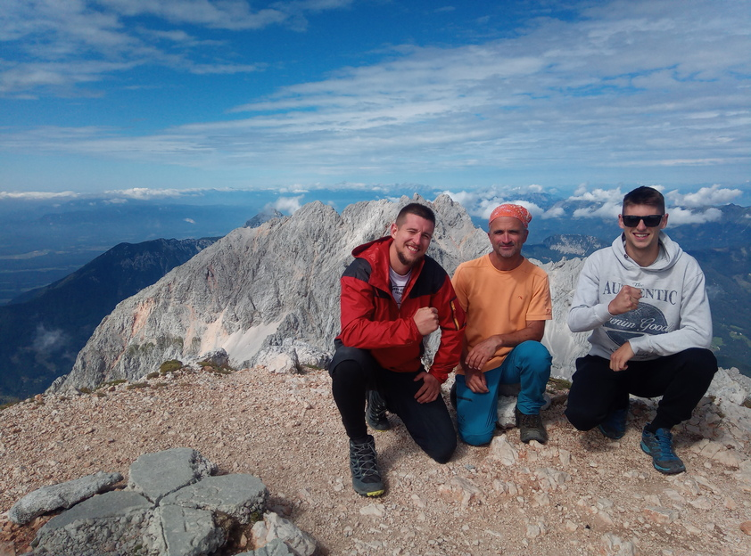
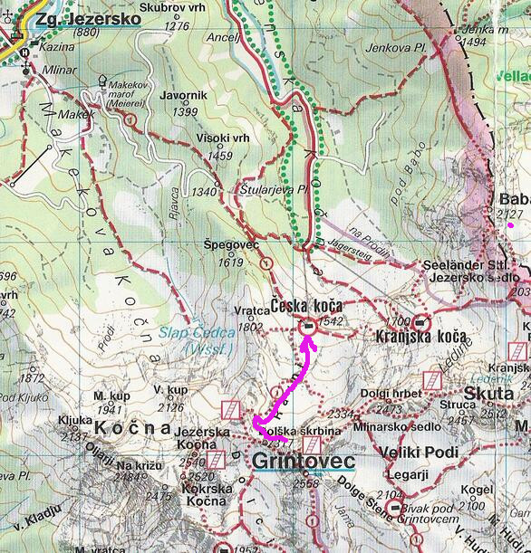
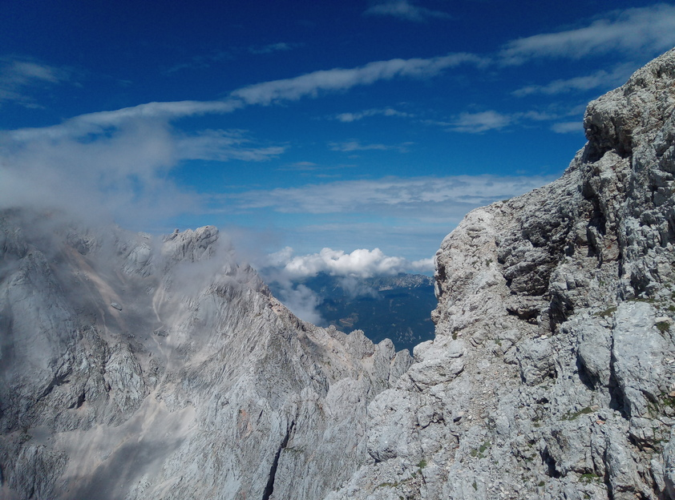

Grintovec (via Planšarsko Jezero, Češka Koča)¶
Gemäß einer alten Tradition hatte ich mir für die Zeit nach einer Schulung in Bleiburg/Kärnten aus den umliegenden Bergen den interessantesten ausgesucht: den Grintovec (2558m) in den Steiner Alpen.

Zusammenfassung
Ich hatte die Steiner Alpen davor noch nicht gekannt. Nun, da ich das gesehen habe, steht fest: nächstes Jahr wird es eine Überschreitung werden.
Der Grintovec und, soweit man von hier aus sehen kann, der Rest der Steiner Alpen auch, ist ein höchst interessanter Steinhaufen.
Ungeübte haben hier nichts verloren:
Man braucht öfters mal die Hände.
Wenn man Höhenangst hat, sollte man öfters mal nicht nach unten schauen.
Ein Helm kann nicht schaden.
Schottersurfer kommen auf ihre Rechnung.
In diesem Artikel
Anreise¶

Nach der Schulung rein ins Auto, über Bad Eisenkappel und den Seebergsattel [1] nach Planšarsko Jezero (OpenStreetMap, Google Maps) - ein nettes kleines Dorf, in dem die Uhren stehengeblieben zu sein scheinen.
Ich habe am Parkplatz beim See geparkt - nicht wissend, dass es weiter hinten im Tal auch einen Parkplatz gibt. Am Weg ins Tal beginnt man schon zu ahnen, was einen erwartet.

|
Češka Koča¶

Hinten rechts halten, immer den Wegweisern “Češka Koča” nach, ein gut markierter Wanderweg. Es geht stetig bergauf, aber nicht verzagen: am Eingang zum Kar ist plötzlich die Hütte da. Sehr gemütlich, freundlich, kurz: alles vorhanden, was man braucht [2].

|
Zum Frühstück (ich hatte eine Nacht im Lager gebucht) ein respektvoller Blick auf den zu erklimmenden Steinhaufen, und dann los.

|
Hinauf¶

Der Weg durchs Kar zieht sich, bis man sich links haltend die Wand erreicht. Wiederum gilt: nicht verzagen. Dass es bergauf geht, hat man mittlerweile akzeptiert (deswegen ist man schliesslich dort). Dass man vor der Wand stehend sich fragt, wie man denn hier hinaufkomme, passiert Anfängern mitunter. So geschehen hier an diesem Punkt: zwei Jungs aus Izola/Slowenien stellten sich gerade diese Frage, als ich ankam. Meine Frage, ob ich bei ihnen bleiben solle, wurde mit “ja” beantwortet - ich hatte für den Tag zwei Adoptivsöhne gewonnen.

Blick aus der Wand auf den Nachbarberg, Kočna |

Der Rest der Steiner Alpen |

|

|

Die Adoptivsöhne haben sichtlich Spaß am Klettern |
 |
{kind=link}
Runter¶
{kind=link}
Als Abstieg hatte ich die erweiterte Runde unter der Kočna gewählt. Sollte man am Gipfel schon etwas fertig sein, empfehle ich, so runterzugehen wie man raufgekommen ist - den ostseitigen Weg. Der westseitige ist um einiges schöner, führt über einen langen Grat um Felstürme, dafür ist er auch um einiges anstrengender.

|

|
|  | 
|
{kind=link}
Zum Abschluss noch ein 200m langes Pulverhangerl, und zurück auf der Češka Koča ein wohlverdientes Laško.

|

|
Zusammenfassung¶
Die Steiner Alpen sind ein Gebiet ganz nach meinem Geschmack. Schroff, wunderschön, selektiv, anstrengend, nicht für jedermann. Die Kette umfasst einige Gipfel über 2000m, umschlossen von gletschergeformten Karen und steilen Wänden.
Ein markierter Weg erstreckt sich in West/Ost-Richtung über alle Gipfel, mit Schlafmöglichkeiten in Biwaks und Hütten - eine Einladung für eine Überquerung, die nächstes Jahr dringend fällig ist.

Fußnoten